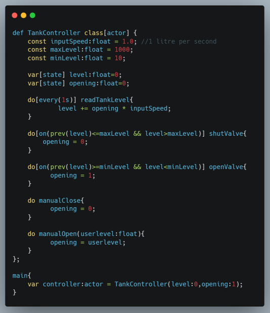
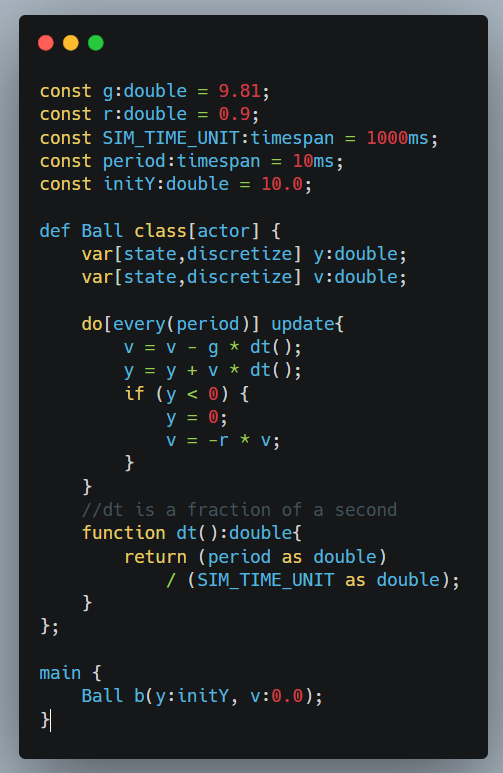

What is M?
- M is a textual grammar-driven language for modeling systems and software which are composed of concurrent, reactive, asynchronous, distributed entities.
- M looks like popular programming languages like Java, C++ but it is for programming system models for simulation, code generation and formal verification in one place
- M uses an extended timed actor model to model system entities and interactions
- M integrates discrete event simulation semantics
- M has a formalized semantics and type system, which allows to convert it other models for simulation, execution, verification with semantic preservation


What is model compilation?
Traditionally, a program compiler takes a program written in a programming language, parses its concrete syntax, generates a corresponding abstract syntax tree (AST) for semantic analyses and intermediate code generation. A program compiler finally generates a executable code to run the input program on a target machine.
Similarly, a model compiler takes a model composed in a modeling language, and also generates an AST decorated with various semantic attributes to verify the input model's semantic correctness, including type safety, then the decorated AST is reused by different backend consumers to generate other specialized models therefrom for different inspection kinds: simulation, real deployment and formal verification (typically, model-checking). By facilitating multi-target compilation right at the beginning, M compiler allows reusage of syntactical and semantical analysis for subsequent translations from a high-level abstract model to concrete target models with semantic preservation.
Author(s)
The M toolchain and language was created by Hiep Hong Trinh during his PhD study at Mälardalen University, Västerås, Sweden (2023 - 2027, expectedly).
Supervisors: Federico Ciccozzi, Marjan Sirjani, Mikael Sjödin, Abu Naser Masud
Releases
The M compiler and its default backends (M-simulator, M-executor, M-verifier) will be released soon. Users can use M directly or adapt their models to M to reuse the model compilation paradigm. They can create their custom generator by inheriting the base generator and overriding its methods. A conceptual Java code goes as below:
package m.generators.mine;
import m.compiler.*;
import m.generators.base.*;
class MyGenerator extends BaseGenerator{
@Override
public String outputFileExt() {
return "mine";
}
@Override
public String generateVarDecl(VarDecl decl){...}
}
main{
MCompiler mc = new MCompiler();
mc.compile(/path/to/your/m/file);
mc.generate(/path/to/your/generator/class);
}
Publications